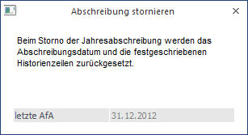
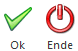

Im Menü "Abschreibung stornieren" kann die letzte Jahresabschreibung des Mandanten rückgesetzt werden. Dabei wird die Festgeschrieben-Markierung in der Historienzeile der Anlagengüter entfernt und das Datum des letzten Abschreibungslaufes zurückgesetzt. Um eine Abschreibung zu stornieren, muss der Menüpunkt in dem Wirtschaftsjahr, in dem der letzte Abschreibungslauf erfolgte, geöffnet werden.
Beim Abschreibungsstorno wird ein eigener Storno-Stapel (-34) erstellt, der wie der Abschreibungsstapel aufgebaut ist (AB-Buchungen in Periode 13) und die negativen Abschreibungs-Werte enthält. Damit kann ein zuvor gebuchter Abschreibungslauf auch in der FIBU wieder storniert werden. Voraussetzung ist, dass die Abschreibung, die storniert wird, mindestens mit Version 9.1 durchgeführt wurde.
Zusätzlich werden auch im Anlagenjournal Stornozeilen eingefügt.
Für den FIBU-Buchungsstapel des Abschreibungs-Stornos (Stapel -34) kann der Buchungstext im ANBU-Parameter frei definiert werden. Ist im ANBU-Parameter kein eigener Buchungstext hinterlegt, wird "Abschreibung Storno" als Buchungstext in den FIBU-Buchungsstapel eingetragen.
Die Stornierung der Jahresabschreibung wird in dem Menüpunkt
1 Abschluss
1 Abschreibung stornieren
durchgeführt.

Buttons

Ø OK
Durch Drücken der F5-Taste bzw. des OK-Buttons wird die Jahresabschreibung storniert, die Buchungsübergabe auf den Drucker/Spooler ausgegeben und der Buchungsstapel -34 in die FIBU übergeben.
Ø Ende
Durch Drücken des Ende-Buttons oder der ESC-Taste wird das Fenster geschlossen.